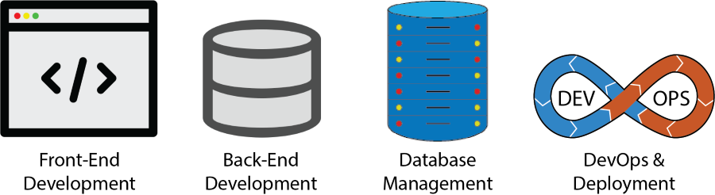
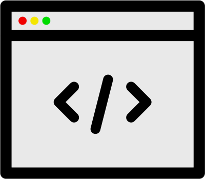
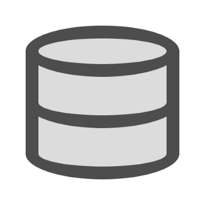
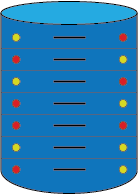
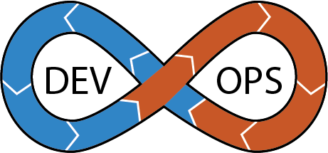

About Full-Stack Programming And My Experience With It
Full-Stack Programming
Full-Stack Programming refers to the development of software applications or systems where a programmer works on both the front-end (client-side) and back-end (server-side) components. It involves building and integrating all the layers and technologies required for a complete application, from the user interface to the database and everything in between.
By having expertise in both front-end and back-end technologies, full-stack developers can seamlessly work across various layers of an application. They understand how different components interact with each other and can effectively collaborate with front-end and back-end teams. Full-stack programming skills enable developers to take projects from concept to completion, making them versatile and capable of handling diverse software development tasks.
The 4 Pillars Of Full-Stack Development
Front-End Development

Front-End development focuses on creating the user-facing components of an application or website, including UI, UX, and interactivity. It involves using HTML, CSS, JavaScript, frameworks, and libraries to build visually appealing, responsive, and interactive user interfaces.
HTML:
CSS:
JavaScript:
Frameworks & Libraries:
Back-End Development

Back-End development focuses on the server-side logic and infrastructure of a software application or website. It involves the creation and management of the behind-the-scenes functionality that enables the frontend (user-facing) components to interact with databases, external services, and other resources.
Java:
PHP:
Python:
C#:
SQL:
Frameworks & Libraries:
Database Management

Database management focuses on creating a logical and efficient database design based on the identified entities, relationships, and attributes. This involves defining tables, establishing primary and foreign keys, and setting up relationships between tables.
MySQL:
Oracle:
MongoDB:
DevOps and Deployment

DevOps and Deployment focuses on deploying applications to production environments. They may configure servers, manage hosting services, set up continuous integration/continuous deployment (CI/CD) pipelines, and ensure the smooth deployment and operation of the application.
Google Cloud:
AWS:
Azure: